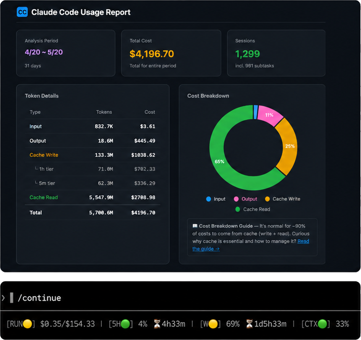

claude-code-token-saver
토큰 낭비 자동 감지 → 비용 최대 45% 절감

Token Guardian
— 1시간 캐시 만료를 감지해 비싼
재전송을
자동 차단
.
/continue
— LLM 호출, 토큰 사용 없이 이전 세션
맥락을
무료 복원
(트랜스크립트 .jsonl 기반).
/usage-view + /setup-statusline
— 토큰이 어디서 새는지 실시간 시각화.
OPEN SOURCE
github.com/ww-w-ai/claude-code-token-saver